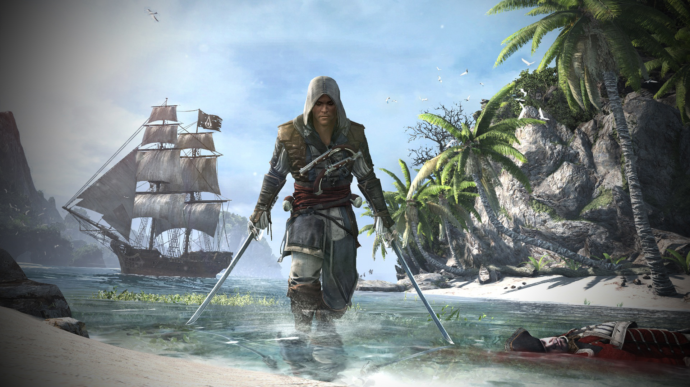

Assassin's Creed.
Introducción.

Assassins Creed es un videojuego de aventura de acción y de sigilo en la que el jugador sobre todo asume el papel de Altaïr, experimentado por el protagonista Desmond Miles. El objetivo principal del juego es llevar a cabo una serie de asesinatos ordenados por Al Mualim, el líder de los asesinos.
Assassin's Creed (2007).


La historia gira en torno al conflicto entre dos "facciones" que lucharon entre sí durante cientos de años, pero la narración del juego comienza en las cruzadas del siglo XII.
Assassin's Creed II (2009).

Esta entrega está ambientada en el Renacimiento. Parte con un nuevo personaje llamado Ezio Auditore Da Firenze, un joven de clase acomodada de la sociedad de la República de Florencia.
Assassin's Creed: Brotherhood (2010).


La historia de Ezio Auditore continúa en 1499, donde él sale de la Bóveda, confundido por lo que vio en el interior. Escapa de Roma con su tío Mario Auditore y llega a Monteriggioni. Una vez en casa, Ezio es consolado por la posibilidad de que su venganza personal y sus días como un asesino han terminado.